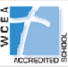

Quick Links

St. Vincent Ferrer School is fully accredited by the Western Association of Schools and Colleges (WASC) and the Western Catholic Education Association (WCEA)
Mission
Saint Vincent Ferrer School, an academic ministry of Saint Vincent Ferrer Church, educates students in grades K-8. We provide our students with the skills needed to live peacefully in today’s society. We commit ourselves to creating a Catholic environment that promotes kindness, respect, compassion, tolerance, self-worth and academic excellence. As stewards of the Parish Community, we emphasize and model the importance of responsibility, commitment, cooperation and service towards one another.
Events & Announcements
Please join us for any of the following community events:
- 8/24/09: First Day of School
- 9/17/09 & 9/22/09: Preschool Orientation
- 10/15/09: Kindergarten Lunch Fundraiser
- 10/31/09: Parish/School Carnival
- 11/04/09: Parents & Friends Meeting (7:00pm)
- 11/19/09: Computer Lab Lunch Fundraiser
Everyone is in the local community is invited to join us for Back to School night (9/02/09).
Be sure to mark the date and plan to attend our parish/school Halloween Carnival on Saturday, 10/31/09.